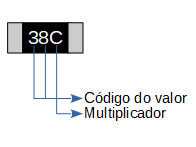
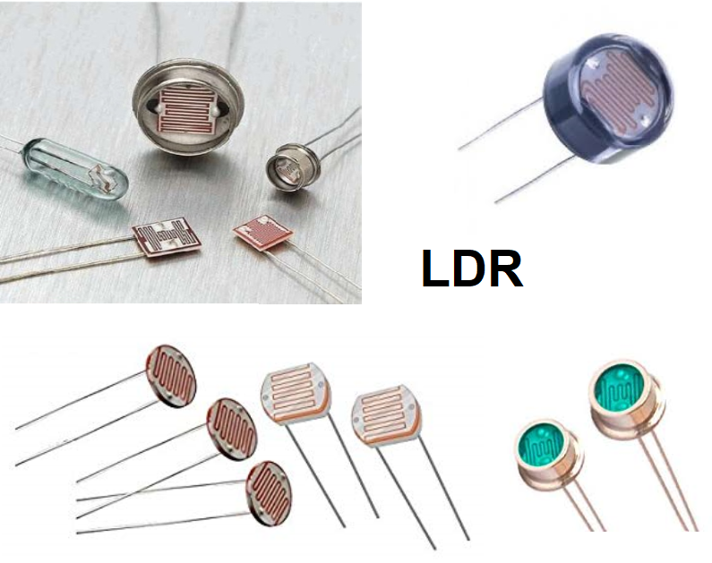

1. Introdução
Neste tópico abordaremos o assunto resistor e resistência.
Mas o que é resistor? E resistência é o mesmo que resistor?
Então vamos iniciar com o que é resistor, um resistor vem a ser o elemento físico usado pelos técnicos e engenheiros eletro-eletrônicos para limitar a tensão ou a corrente sobre um outro elemento ligado junto a ele. Já a resistência não está ligada somente ao elemento resistor, pois todos os corpos na natureza possuem uma resistência elétrica. Deste modo, resitência vem a ser a capacidade que um corpo possui de se opor a passagem da corrente elétrica.
Já o elemento resistor pode ter sua resistência fixa ou variável, se variável são denominados: potenciômetro e reostato resistência variável de forma mecânica, com uma barrra deslizante. O LDR, resistor que varia resistência com a luminosidade, ou seja, quanto mais luminoso o local menor a resistência do LDR, os PTC e NTC que variam a resitência de acordo com o acrécimo de temperatura, PTC, e decréscimo de temperatura NTC, assim os chamamos de termístores. E ainda temos os varistores, VDR, que modificam a resistência de acordo com a variação da tensão elétrica, ou seja com aumento da tensão sobre ele existe um decréscimo da resistência do varistor.
1.1. Tipos de resistores fixos:
Os resitores fixos podem ser divididos em PTH (pass thru the hole) e SMD (surface mounted device).
1.1.1. PTH (Atravessa o furo):
-
Os resistores PTH podem ser divididos nas séries descritas a seguir:
- Série de resistores de 4 faixas: E6, E12, E24;
- Série de resistores de 5 faixas: E48, E96 e E192.
Resistores têm suas caracteristicas técnicas divididas em fundamentais e secundárias, Assim suas especificações técnicas, segundo as carracteristacas, são:
-
Fundamentais:
- Valor nominal da resistência em Ohm [Ω];
- Potência de dissipação nominal [W].
-
Secundárias:
- Tolerância [%] - diferença em percentagem da variação do valor da resistência, acima ou abaixo do valor nominal;
- Coeficiente de temperatura;
- Coeficiente de tensão;
- Tensão máxima nominal [V];
- Tensão de ruído;
- Diagrama de potência-temperatura;
- Característica resistência-frequência.
- Valores nominais de resistência:
- N = valor nominal da resistência na posição n;
- n = posição;
- k = coeficiente relacionado com a tolerância.
| Tolerância (%) | k | Nome da série |
| 50 | 3 | E3 |
| 20 | 6 | E6 |
| 10 | 12 | E12 |
| 5 | 24 | E24 |
| 2 | 48 | E48 |
| 1 | 96 | E96 |
| 0,5 | 192 | E192 |
| 0,25 | 192 | E192 |
| 0,1 | 192 | E192 |
| Código de cores de resistores | |||||||
| Cor | 1o Digito | 2o Digito | 1o Digito | Multiplicador | Porcentagem | TRC - Coef. de Tempo. da Res. | |
| 6 faixas | A | B | C | 10D | D | ±E (%) | F (ppm/K) |
| 5 faixas | A | B | C | 10D | D | ±E (%) | − |
| 4 faixas | A | B | − | 10C | C | ±D (%) | − |
| Prata | − | − | − | 10-2 | 0,01 | ±10 | − |
| Ouro | − | − | − | 10-1 | 0,1 | ±5 | − |
| Preto | − | 0 | 0 | 100 | 1 | − | − |
| Marrom | 1 | 1 | 1 | 101 | 10 | ±1 | 100 |
| Vermelho | 2 | 2 | 2 | 102 | 100 | ±2 | 50 |
| Laranja | 3 | 3 | 3 | 103 | 1000 | − | 15 |
| Amarelo | 4 | 4 | 4 | 104 | 10000 | − | 25 |
| Verde | 5 | 5 | 5 | 105 | 100000 | ±0,5 | − |
| Azul | 6 | 6 | 6 | 106 | 1000000 | 0,25 | 10 |
| Violeta | 7 | 7 | 7 | − | − | ±0,1 | 5 |
| Cinza | 8 | 8 | 8 | − | − | ±0,05 | − |
| Branco | 9 | 9 | 9 | − | − | − | − |
Para resistores de 4 faixas temos:
| A = Vermelho = 2 |
| B = Violeta = 7 |
| C = Laranja = 3 ou 1000 |
| D = Prata = ±10% |
| Então: |
| R = AB x 10C ±D% = 27 x 103Ω ±10% = 27 kΩ ±10% |
| Assim temos que o resistor varia entre: |
| Tomando 27 kΩ = 27.000Ω = 100% |
| Nível inferior: 100 - 10 = 90% |
| Nível superior: 100 + 10 = 110% |
| Nível inferior = Ni = 90/100 = 0,9 |
| Nível superior = Ns = 110/100 = 1,1 |
| Então os valores máximo e mínimo do resistor são: |
| Rmín = 27.000 x 0,9 = 24.300 Ω = 24,3 kΩ |
| Rmáx = 27.000 x 1,1 = 29.700 Ω = 29,7 kΩ |
Para resistores de 5 faixas temos:
| A = Vermelho = 2 |
| B = Vermelho = 2 |
| C = Violeta = 7 |
| D = Laranja = 3 ou 1000 |
| E = Marrom = ±1% |
| Então: |
| R = ABC x 10D ±E% = 227 x 103Ω ±1% = 227 kΩ ±1% |
| Assim temos que o resistor varia entre: |
| Tomando 227 kΩ = 227.000Ω = 100% |
| Nível inferior: 100 - 1 = 99% |
| Nível superior: 100 + 1 = 101% |
| Nível inferior = Ni = 99/100 = 0,99 |
| Nível superior = Ns = 101/100 = 1,01 |
| Então os valores máximo e mínimo do resistor são: |
| Rmín = 227.000 x 0,99 = 204.300 Ω = 204,3 kΩ |
| Rmáx = 227.000 x 1,01 = 229.2700 Ω = 229,27 kΩ |
Para resistores de 6 faixas temos:
| A = Amarelo = 4 |
| B = Violeta = 7 |
| C = Azul = 6 |
| D = Vermelho = 2 ou 100 |
| E = Verde = ±0,5% |
| F = Marrom = 100 ppm/K |
| Então: |
| R = ABC x 10D ±E% F = 476 x 102Ω ±0,5% 100 ppm/K = 47,6 kΩ ±0,5% 100 ppm/K |
| Assim temos que o resistor varia entre: |
| Tomando 47,6 kΩ = 47.600Ω = 100% |
| Nível inferior: 100 - 0,5 = 99,5% |
| Nível superior: 100 + 0,5 = 100,5% |
| Nível inferior = Ni = 99,5/100 = 0,995 |
| Nível superior = Ns = 100,5/100 = 1,005 |
| Então os valores máximo e mínimo do resistor são: |
| Rmín = 47.600 x 0,995 = 47.362 Ω = 47,362 kΩ |
| Rmáx = 47.600 x 1,005 = 47.838 Ω = 47,838 kΩ |
|
Já o ppm/k, quer dizer que há uma varaição de parte por milhão a cada grau Kelvin. A variação é da resistência com o aumento de temperatura. Então temos: |
| 100ppm = 100/1000000 = 0,0001 = 0,01%/K |
| Rppm = 47.600 * 0,0001 = 4,76Ω/K |
Valores pa dronizados para as séries En:
| Valores a dividir por 10 até mΩ ou multiplicar por 10 até MΩ | |||
| E24 | E12 | E6 | E3 |
| 10 | 10 | 10 | 10 |
| 11 | - | - | - |
| 12 | 12 | - | - |
| 13 | - | - | - |
| 15 | 15 | 15 | - |
| 16 | - | - | - |
| 18 | 18 | - | - |
| 20 | - | - | - |
| 22 | 22 | 22 | 22 |
| 24 | - | - | - |
| 27 | 27 | - | - |
| 30 | - | - | - |
| 33 | 33 | 33 | - |
| 36 | - | - | - |
| 39 | 39 | - | - |
| 43 | - | - | - |
| 47 | 47 | 47 | 47 |
| 51 | - | - | - |
| 56 | 56 | - | - |
| 62 | - | - | - |
| 68 | 68 | 68 | - |
| 75 | - | - | - |
| 82 | 82 | - | - |
| 91 | - | - | - |
| Valores a dividir por 10 até mΩ ou multiplicar por 10 até MΩ | |||||||||||
| E192 | E96 | E48 | E192 | E96 | E48 | E192 | E96 | E48 | E192 | E96 | E48 |
| 100 | 100 | 100 | 178 | 178 | 178 | 316 | 316 | 316 | 562 | 562 | 562 |
| 101 | - | - | 180 | - | - | 320 | - | - | 569 | - | - |
| 102 | 102 | - | 182 | 182 | - | 324 | 324 | - | 576 | 576 | - |
| 104 | - | - | 184 | - | - | 328 | - | - | 583 | - | - |
| 105 | 105 | 105 | 187 | 187 | 187 | 332 | 332 | 332 | 590 | 590 | 590 |
| 106 | - | - | 189 | - | - | 336 | - | - | 597 | - | - |
| 107 | 107 | - | 191 | 191 | - | 340 | 340 | - | 604 | 604 | - |
| 109 | - | - | 193 | - | - | 344 | - | - | 612 | - | - |
| 110 | 110 | 110 | 196 | 196 | 196 | 348 | 348 | 348 | 619 | 619 | 619 |
| 111 | - | - | 198 | - | - | 352 | - | - | 626 | - | - |
| 113 | 113 | - | 200 | 200 | - | 357 | 357 | - | 634 | 634 | - |
| 114 | - | - | 203 | - | - | 361 | - | - | 642 | - | - |
| 115 | 115 | 115 | 205 | 205 | 205 | 365 | 365 | 365 | 649 | 649 | 649 |
| 117 | - | - | 208 | - | - | 370 | - | - | 657 | - | - |
| 118 | 118 | - | 210 | 210 | - | 374 | 374 | - | 665 | 665 | - |
| 120 | - | - | 213 | - | - | 379 | - | - | 673 | - | - |
| 121 | 121 | 121 | 215 | 215 | 215 | 383 | 383 | 383 | 681 | 681 | 681 |
| 123 | - | - | 218 | - | - | 388 | - | - | 690 | - | - |
| 124 | 124 | - | 221 | 221 | - | 392 | 392 | - | 698 | 698 | - |
| 126 | - | - | 223 | - | - | 397 | - | - | 706 | - | - |
| 127 | 127 | 127 | 226 | 226 | 226 | 402 | 402 | 402 | 715 | 715 | 715 |
| 129 | - | - | 229 | - | - | 407 | - | - | 723 | - | - |
| 130 | 130 | - | 232 | 232 | - | 412 | 412 | - | 732 | 732 | - |
| 132 | - | - | 234 | - | - | 417 | - | - | 741 | - | - |
| 133 | 133 | 133 | 237 | 237 | 237 | 422 | 422 | 422 | 750 | 750 | 750 |
| 135 | - | - | 240 | - | - | 427 | - | - | 759 | - | - |
| 137 | 137 | - | 243 | 243 | - | 432 | 432 | - | 768 | 768 | - |
| 138 | - | - | 246 | - | - | 437 | - | - | 77 | - | - |
| 140 | 140 | 140 | 249 | 249 | 249 | 442 | 442 | 442 | 787 | 787 | 787 |
| 142 | - | - | 252 | - | - | 448 | - | - | 796 | - | - |
| 143 | 143 | - | 255 | 255 | - | 453 | 453 | - | 806 | 806 | - |
| 145 | - | - | 258 | - | - | 459 | - | - | 816 | - | - |
| 147 | 147 | 147 | 261 | 261 | 261 | 464 | 464 | 464 | 825 | 825 | 825 |
| 149 | - | - | 264 | - | - | 470 | - | - | 835 | - | - |
| 150 | 150 | - | 267 | 267 | - | 475 | 475 | - | 845 | 845 | - |
| 152 | - | - | 271 | - | - | 481 | - | - | 856 | - | - |
| 154 | 154 | 154 | 274 | 274 | 274 | 487 | 487 | 487 | 866 | 866 | 866 |
| 156 | - | - | 277 | - | - | 493 | - | - | 876 | - | - |
| 158 | 158 | - | 280 | 280 | - | 499 | 499 | - | 887 | 887 | - |
| 160 | - | - | 284 | - | - | 505 | - | - | 898 | - | - |
| 162 | 162 | 162 | 287 | 287 | 287 | 511 | 511 | 511 | 909 | 909 | 909 |
| 164 | - | - | 291 | - | - | 517 | - | - | 920 | - | - |
| 165 | 165 | - | 294 | 294 | - | 523 | 523 | - | 931 | 931 | - |
| 167 | - | - | 298 | - | - | 530 | - | - | 942 | - | - |
| 169 | 169 | 169 | 301 | 301 | 301 | 536 | 536 | 536 | 953 | 953 | 953 |
| 172 | - | - | 305 | - | - | 542 | - | - | 965 | - | - |
| 174 | 174 | - | 309 | 309 | - | 549 | 549 | - | 976 | 976 | - |
| 176 | - | - | 312 | - | - | 556 | - | - | 988 | - | - |
1.1.2. SMD (Montado sobre a superfície):
-
Os resitores SMD têm duas classificações distintas no padão EIA:
- Leitura do valor de acordo com que está no corpo 3 digitos e 4 digitos;
- Três digitos - Tolerância (5%):
- Quatro digitos - Tolerância (1%):
- Leitura de acordo com a tabela EIA-96
- Leitura do valor de acordo com a tabela de 3 digitos - Tolerância (1%) 
| A = Primeiro digito = 6 |
| B = Segundo digito = 8 |
| C = Multiplicador = 1000 |
| Então: |
| AB x C ±5% = 68 x 1000 ±5% = 68.000 Ω ±5% = 68 kΩ ±5% |
| A = Primeiro digito = 3 |
| B = Segundo digito = 3 |
| C = Terceiro digito = 3 |
| D = Multiplicador = 100 |
| Então: |
| ABC x D ±1% = 333 x 100 ±1% = 33.300 Ω ±1% = 33,3 kΩ ±1% = 33k3Ω ±1% |
| Tabela de valores | |||||||||||
| Código | Valor | Código | Valor | Código | Valor | Código | Valor | Código | Valor | Código | Valor |
| 01 | 100 | 17 | 147 | 33 | 215 | 49 | 316 | 65 | 464 | 81 | 681 |
| 02 | 102 | 18 | 150 | 34 | 221 | 50 | 324 | 66 | 475 | 82 | 698 |
| 03 | 105 | 19 | 154 | 35 | 226 | 51 | 332 | 67 | 487 | 83 | 715 |
| 04 | 107 | 20 | 158 | 36 | 232 | 52 | 340 | 68 | 499 | 84 | 732 |
| 05 | 110 | 21 | 162 | 37 | 237 | 53 | 348 | 69 | 511 | 85 | 750 |
| 06 | 113 | 22 | 165 | 38 | 243 | 54 | 357 | 70 | 523 | 86 | 768 |
| 07 | 115 | 23 | 169 | 39 | 249 | 55 | 365 | 71 | 536 | 87 | 787 |
| 08 | 118 | 24 | 174 | 40 | 255 | 56 | 374 | 72 | 549 | 88 | 806 |
| 09 | 121 | 25 | 178 | 41 | 261 | 57 | 383 | 73 | 562 | 89 | 825 |
| 10 | 124 | 26 | 182 | 42 | 267 | 58 | 392 | 74 | 576 | 90 | 845 |
| 11 | 127 | 27 | 187 | 43 | 274 | 59 | 402 | 75 | 590 | 91 | 866 |
| 12 | 130 | 28 | 191 | 44 | 280 | 60 | 412 | 76 | 604 | 92 | 887 |
| 13 | 133 | 29 | 196 | 45 | 287 | 61 | 422 | 77 | 619 | 93 | 909 |
| 14 | 137 | 30 | 200 | 46 | 294 | 62 | 432 | 78 | 634 | 94 | 931 |
| 15 | 140 | 31 | 205 | 47 | 301 | 63 | 442 | 79 | 649 | 95 | 953 |
| 16 | 143 | 32 | 210 | 48 | 309 | 64 | 453 | 80 | 665 | 96 | 976 |
| Tabela de multiplicador | |
| Letra | Multiplicador |
| F | 100000 |
| E | 10000 |
| D | 1000 |
| C | 100 |
| B ou H | 10 |
| A | 1 |
| X ou S | 0.1 |
| Y ou R | 0.01 |
| Z | 0.001 |
| Potência Resistores SMD | |||
| Empacotamento | Dimensão (L x C) | Potência | |
| - | Largura (mm) | Comprimento (mm) | (W) |
| 0201 | 0.6 | 0.3 | 1/20 |
| 0402 | 1.0 | 0.5 | 1/16 |
| 0603 | 1.6 | 0.8 | 1/16 |
| 0805 | 2.0 | 1.25 | 1/10 |
| 1206 | 3.2 | 1.6 | 1/8 |
| 1210 | 3.2 | 2.5 | 1/4 |
| 1812 | 4.5 | 3.2 | 1/3 |
| 2010 | 5.0 | 2.5 | 1/2 |
| 2512 | 6.35 | 3.2 | 1 |
| AB = Código do valor = 38 ⇒ 243 |
| C = Multiplicador = 100 |
| Então: |
| AB x C ±1% = 243 x 100 ±1% = 24.300 Ω ±1% = 24,3 kΩ ±1% = 24k3 Ω ±1% |
1.2. Tipos de resistores variáveis:
Os resitores variáveis são divididos em poteciômetro, varistor, termistor e LDR.
- Potenciômetros:
- Construção mecânica
- Potenciômetro de eixo giratório, que consiste em um eixo de giro finito ou infinito;
- Potenciômetro de barra deslizante, que consiste de uma barra deslizante;
- Trimpot, são potenciômetro de eixo giratório que tem seus valores ajustados uma vez e ficam fixos neste valor internamente nas placas de circuito impresso.
- Construção eletrônica
- Potenciômetros digitais, que são circuitos integrados que variam a resistência de acordo com sinais digitais.
- Variação da resistência
- Linear, a variação da resistência é proporcional a variação da resistência;
- Logarítmica, a variação da resistência se dá de acordo com uma função logrítmica, tornando sua variação suave, este tipo de potenciômetro e muito usado em sistemas de áudio;
- Anti-logarítmica, a variação da resistência se dá de acordo com uma função anti-logarítmica, tornando sua variação mais brusca.
- Potenciômetros Ajustáveis (Trimpots)
- Potenciometros variáveis
- Potenciômetro digital
- Varistor
- Termistor
- LDR
Os potênciometro são utilizados em circuitos de baixa potência, pequeno sinal, que variam entre 0,25W a 1W. Para potência mais elevadas usamos os resitores de fio com derivação ou Reostatos. Sua construção pode ser mecânica ou eletrõnica e sua variação de acordo com a resistência linear ou logarítmica
| Potenciômetro | |||||||
| 3590S | WH148 | RV16 | WH188 | ||||
| Resitência (Ω) | Tolerância (%) | Resitência (Ω) | Tolerância (%) | Resitência (Ω) | Tolerância (%) | Resitência (Ω) | Tolerância (%) |
| 200 | 5 | 5k | 20 | 5k | 10 | 100 | 20 |
| 500 | 10k | 10k | 200 | ||||
| 1k | 20k | 20k | 220 | ||||
| 2k | 50k | 50k | 250 | ||||
| 5k | 100k | 100k | 470 | ||||
| 10k | 200k | 200k | 500 | ||||
| 20k | 500k | 500k | 1k ≤ Rn ≤ 5k | ||||
| 50k | 1M | 1M | 10k ≤ Rn ≤ 50k | ||||
| 100k | 2M | − | 100k ≤ Rn ≤ 500k | ||||
| − | − | − | 1M ≤ Rn ≤ 5M | 30 | |||
O varistor ou VDR (Voltage Dependet Resistor), resistor dependente de tensão, e um tipo de resistor que varia de acordo com o aumento da tensã, ou seja, quanto maior a tensão de entrada sobre o elemento menor a resitência sobre o mesmo. Sua função é protegeer o circuito contra surtos de tensão e corrente alternadas ou contínuas. Sua construção pode ser de metal óxido de Zinco ou Carboneto de Silício. Sendo que o de metal oxído de Zinco tem uma atuação mais rápida e o de carbonat de Silício uma atuação mais lenta, quanto ao tempo de atuação contra os surtos de tensão presentes na entrada do sistema eletroeletrônico.
Quanto a sua construção física, existem vários tamanhos e na sua grande maioria são muito parecidos com os NTC e PTC. Os varistores são encontrados não pela varição de sua resistência, mas sim pela tensão máxima adimissível, que pode variar de 18V a 1800V AC, e 11VRMS a 1100VRMS ou seja eficaz, dependendo do modelo do componente. Um exemplo de varistor é o MOV-14DxxxK.
O PTC (Positive Temperature Coeficient), ou seja, coeficiente positivo de temperatura e o NTC (Negative Temperature Coeficient), ou seja, coeficiente negativo de temperatura, são elementos resitivos que alteram sua resitência elétrica de acordo com a variação de temperatura do elemento. No caso do PTC um aumento positivo da temperatua faz com que a resistência elétrica do elemento aumente, proporcionando uma leitura da temperatura com o acréscimo da resistência elétrica. Já o NTC trabalha com temperaturas negativas, assim quanto menor a temperatura, ou seja quanto mais negastiva, menor será a resistência elétrica do elemento, proporcionando uma leitura da temperatura com o decréscimo da resitência elétrica. Na realidade o que é lido no sistema é a tensão elétrica ou a corrente elétrica que está sobre este elemento. Os termistores São muito usados para controlar ou alterar a temperatura em dispositivos eletro-eletrônicos, como alarmes, termômetros, "relógios", circuítos eletrônicos de compensação térmica, dissipadores de calor, ar-condicionados.
O LDR (Light Dependent Resistor), ou seja resistor dependente de luz, é um tipo de resitor que tem a variação de sua resitência ligada a variação da luz ao seu entorno. Quanto memor intensidade luminosa no ambiente maior a resistência elétrica do elemento, com o aumento da luminosidade a resistência elétrica diminui. O LDR é construido a partir de material semicondutor, silício, germânio e outros. O que ocorre internamente no LDR é que quanto mais luz incide sobre o elemento, mais fótons são liberados e assim a resistência elétrica do elemento diminui facilitando sua a passagem, ou seja criando um caminho para a corrente.
